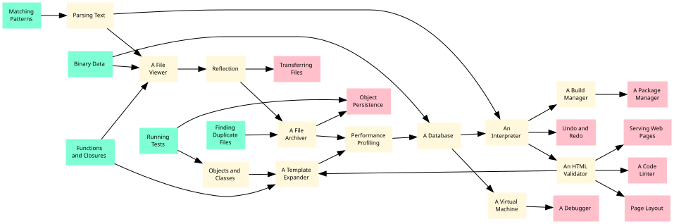
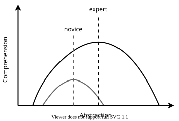

Introduction
- The complexity of a system increases more rapidly than its size.
- The best way to learn design is to study examples, and the best programs to use as examples are the ones programmers use every day.
- These lessons assume readers can write small programs and want to write larger ones, or are looking for material to use in software design classes that they teach.
- All of the content is free to read and re-use under open licenses, and all royalties from sales of this book will go to charity.
The best way to learn design in any field is to study examples [Schon1984, Petre2016], and the most approachable examples are ones that readers are already familiar with. These lessons therefore build small versions of tools that programmers use every day to show how experienced software designers think. Along the way, they introduce some fundamental ideas in computer science that many self-taught programmers haven't encountered. We hope these lessons will help you design better software yourself, and that if you know how programming tools work, you'll be more likely to use them and better able to use them well.
Audience
This learner persona [Wilson2019] describes who this book is for:
Maya has a master's degree in genomics. She knows enough Python to analyze data from her experiments, but struggles to write code other people can use. These lessons will show her how to design, build, and test large programs in less time and with less pain.
Like Maya, you should be able to:
-
Write Python programs using lists, loops, conditionals, dictionaries, and functions.
-
Puzzle your way through Python programs that use classes and exceptions.
-
Run basic Unix shell commands like
lsandmkdir. -
Read and write a little bit of HTML.
-
Use Git to save and share files. (It's OK not to know the more obscure commands.)
These chapters (Figure 1) are also designed to help another persona:
Yim teaches two college courses on software development. They are frustrated that so many books talk about details but not about design and use examples that their students can't relate to. This book will give them material they can use in class and starting points for course projects.

The Big Ideas
Our approach to design is based on three big ideas. First, as the number of components in a system grows, the complexity of the system increases rapidly (Figure 2). However, the number of things we can hold in working memory at any time is fixed and fairly small [Hermans2021]. If we want to build large programs that we can understand, we therefore need to construct them out of pieces that interact in a small number of ways. Figuring out what those pieces and interactions should be is the core of what we call "design".
Second, "making sense" depends on who we are. When we use a low-level language, we incur the cognitive load of assembling micro-steps into something more meaningful. When we use a high-level language, on the other hand, we incur a similar load translating functions of functions into actual operations on actual data.
More experienced programmers are more capable at both ends of the curve, but that's not the only thing that changes. If a novice's comprehension curve looks like the lower one in Figure 3, then an expert's looks like the upper one. Experts don't just understand more at all levels of abstraction; their preferred level has also shifted so they find $ \sqrt{x^2 + y^2} $ easier to read than the Medieval equivalent "the side of the square whose area is the sum of the areas of the two squares whose sides are given by the first part and the second part". This curve means that for any given task, the code that is quickest for a novice to comprehend will almost certainly be different from the code that an expert can understand most quickly.

Our third big idea is that programs are just another kind of data. Source code is just text, which we can process like other text files. Likewise, a program in memory is just a data structure that we can inspect and modify like any other. Treating code like data enables us to solve hard problems in elegant ways, but at the cost of increasing the level of abstraction in our programs. Once again, finding the balance is what we mean by "design".
Formatting
We display Python source code like this:
for ch in "example":
print(ch)
and Unix shell commands like this:
for filename in *.dat
do
cut -d , -f 10 $filename
done
Data files and program output are shown like this:
- name: read
params:
- sample_data.csv
alpha
beta
gamma
delta
We use ... to show where lines have been omitted,
and occasionally break lines in unnatural ways to make them fit on the page.
Where we do this,
we end all but the last line with a single backslash \.
Finally,
we show glossary entries in bold text
and write functions as function_name rather than function_name().
The latter is more common,
but the empty parentheses makes it hard to tell
whether we're talking about the function itself
or a call to the function with no parameters.
Usage
The source for this book is available in our Git repository and all of it can be read on our website. All of the written material in this book is licensed under the Creative Commons - Attribution - NonCommercial 4.0 International license (CC-BY-NC-4.0), while the software is covered by the Hippocratic License. The first license allows you to use and remix this material for noncommercial purposes, as-is or in adapted form, provided you cite its original source; if you want to sell copies or make money from this material in any other way, you must contact us and obtain permission first. The second license allows you to use and remix the software on this site provided you do not violate international agreements governing human rights; please see Appendix D for details.
If you would like to improve what we have, add new material, or ask questions, please file an issue in our GitHub repository or send an email. All contributors are required to abide by our Code of Conduct (Appendix E).
What People Are Saying
Here's what people said about the JavaScript version of this book [Wilson2022a]:
-
Alberto Bacchelli: I've been using this book to teach software design to an undergraduate class of 250 students, and the students and I love it! The positive impact of the book is evident from the improvements in student grades and the quality of their practical assignments, reflecting the substantial learning that's taking place. It's been a joy to see them feel so equipped and inspired.
-
Naomi Ceder: This is my new favorite book on the art of writing software. There is so much to like about it—the way it leads the reader to explore and develop their understanding, the choice of projects and examples, the clarity of the instruction, the Creative Commons license, and much more. It will be my first recommendation for people looking to really learn professional development, either on their own or in a classroom setting.
-
Julia Ferraioli: Blending computer science with sound software engineering practices (with citations!) is difficult enough on its own, but this book guides the reader through practical design patterns that they can put into practice. The addition of historic anecdotes gives readers extra context for what they've learned and brings theory back to practice.
-
Jennifer Moore: The book is an excellent guide for anyone going from "just programming" to building larger projects. It's like a choose-your-own adventure, but the adventure is learning to build very complex software as a composition of much simpler patterns.
-
Jenn Schiffer: This book is both a great refresher if you've not worked with Python in a long time, or your next textbook if you know just enough to be a little dangerous and want to level up. The exercises being tool-based means the experience gained will instantly feel applicable to whatever you end up using the language for.
-
Sue Smith: I know I can share this book with folk in the confidence that they'll get a guided experience that's both accessible and comprehensive, leaving them with real world software skills. Teaching using examples makes the techniques meaningful and tangible to the learner which is in itself a great motivator, and the use of tooling examples is a bonus.
-
Chelsea Troy: Rather than stacking up isolated examples divorced from practical use cases, this book teaches concepts the way we use them: in collaboration with one another. Filled with both pragmatic advice and juicy historical nuggets, this book just might manage to do the thing I've tried to do in classrooms for half a decade: transfer basic engineering skills while conveying what it's like to manage complex software projects.
-
Hazel Weakly: This is an absolutely marvelous book. Very rarely do insightful diagrams, contentious syntax disambiguation, and thoughtful attention to how humans learn and absorb information come together in a coherent package like this. It is exactly the sort of book I wish I'd had at the start of my programming journey; it would've saved me from countless lessons learned the hard way.
Acknowledgments
Like [Wilson2022a], this book was inspired by [Kamin1990, Kernighan1979, Kernighan1981, Kernighan1983, Kernighan1988, Oram2007, Wirth1976] and by:
- The Architecture of Open Source Applications series [Brown2011, Brown2012, Armstrong2013, Brown2016];
- Mary Rose Cook's Gitlet;
- Matt Brubeck's browser engine tutorial;
- Web Browser Engineering by Pavel Panchekha and Chris Harrelson;
- Connor Stack's database tutorial;
- Maël Nison's package manager tutorial;
- Paige Ruten's kilo text editor and Wasim Lorgat's editor tutorial;
- Bob Nystrom's Crafting Interpreters [Nystrom2021]; and
- the posts and zines created by Julia Evans.
I am grateful to Miras Adilov, Alvee Akand, Rohan Alexander, Alexey Alexapolsky, Lina Andrén, Alberto Bacchelli, Yanina Bellini Saibene, Grigoriy Beziuk, Matthew Bluteau, Adrienne Canino, Marc Chéhab, Stephen Childs, Hector Correa, Socorro Dominguez, Christian Drumm, Christian Epple, Julia Evans, Davide Fucci, Thomas Fritz, Francisco Gabriel, Florian Gaudin-Delrieu, Craig Gross, Jonathan Guyer, McKenzie Hagen, Han Qi, Fraser Hay, Alexandru Hurjui, Ingimundarson Finnur, Bahman Karimi, Carolyn Kim, Kitsios Konstantinos, Jenna Landy, Peter Lin, Zihan Liu, Becca Love, Dan McCloy, Ramiro Mejia, Michael Miller, Firas Moosvi, Joe Nash, Sheena Ng, Reiko Okamoto, Joshua Ossai, Juanan Pereira, Mahmoodur Rahman, Arpan Sarkar, Silvan Schlegel, Smith Dave, Sturdevant Stephen, Diyar Taskiran, Ece Turnator, Yao Yundong for feedback on early drafts of this material.
I am also grateful to Shashi Kumar for help with LaTeX, to Odin Beuchat for help with JavaScript, and to the creators of Black, flake8, Glosario, GNU Make, isort, ark, LaTeX, pip, Python, Remark, WAVE, and many other open source tools: if we all give a little, we all get a lot.
All royalties from this book will go to the Red Door Family Shelter in Toronto.
Exercises
Setting Up
- Use pip to install ruff on your computer.
- Run
ruff checkon a few programs you have already written. What problems do they report? Which of these reports do you disagree with?
Avoiding Potholes
Go to the GitHub repository for this book and look at the open issues. Which of them can you understand? What makes the others hard to understand? What could you add, leave out, or write differently when you report a problem that you have found?